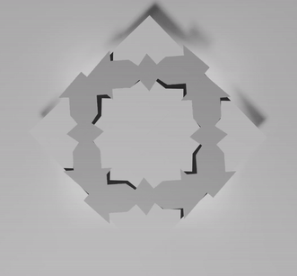

Patternicture was a competition which it's atittude is new way of representing patternss
▾

The purpose of this project is making interaction between
pattern and human
the pattern is inspired by Shamseh
and Chalipa, traditional Iranian patterns of tiling.
the intraction happens among Arduino and altrasound
sensor and audience's hand and the result would
be done
by servos to exprience Patteration.
▾